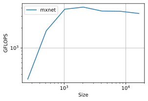
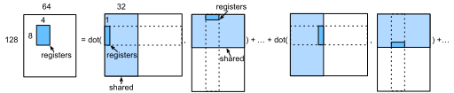
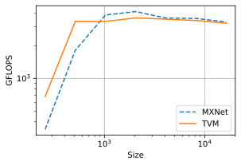

Matrix Multiplication#
In this section, we will extend :numref:ch_block_matmul_cpu to optimize matrix multiplication on GPUs.
import d2ltvm
import numpy as np
import timeit
import tvm
from tvm import te
Setup#
We will use MXNet as our baseline, which calls cuBLAS to execute the matrix multiplication.
# Save to the d2ltvm package.
def matmul_timer_mxnet(n, ctx):
"""The matrix multiplication timer for MXNet
n : width and height of inputs
ctx : device
"""
timer = timeit.Timer(
setup='import d2ltvm\n'
'import mxnet as mx\n'
'a, b, c, = d2ltvm.get_abc((%d, %d), lambda x: mx.nd.array(x, ctx=mx.%s()))\n'
'mx.nd.waitall()' % (n, n, ctx),
stmt='mx.nd.dot(a, b, out=c); c.wait_to_read()')
return timer.timeit
Then we compute its GFLOPS and plot the performance baseline as a function of matrix size.
sizes = 2**np.arange(8, 15, 1)
exe_times = [d2ltvm.bench_workload(matmul_timer_mxnet(int(n), 'gpu'))
for n in sizes]
mx_gflops = 2 * sizes ** 3 / 1e9 / np.array(exe_times)
d2ltvm.plot_gflops(sizes, [mx_gflops], ['mxnet'])

Blocked Matrix Multiplication on GPU#
We will follow :numref:ch_block_matmul_cpu to split the matrix \(C\) into blocks, and have each core (streaming multiprocessor) to compute a block at a time. It can be done by assigning a block to a thread block as we did in :numref:ch_vector_add_gpu (don’t confuse the matrix block with thread block here). As mentioned in :numref:ch_gpu_arch, the GPU core has a finer architecture, we need to split a block further for every CUDA thread in the thread block. The simplest 1-D case was already illustrated in :numref:ch_vector_add_gpu. This section will explore the local memory within a core using 2-D thread indexing.
Thread Block and Registers#
Next let’s explore how to compute an output block using one GPU core in parallel efficiently. We can use the same idea: further splitting the output block into smaller block tiles, and having each thread to compute one tile. :numref:fig_matmul_thread_block shows splitting a \(128 \times 64\) output block into 256 (\(16 \times 16\)) tiles, each of which is an \(8\times 4\) matrix. Then we will create 256 threads within this thread block. Since the output is a matrix, we use a 2-D thread indexing, with blockDim.x = blockDim.y = 16. In addition, we will move the inputs, two vectors with lengths of 8 and 4, respectively, and the output, an \(8\times 4\) matrix, for each thread into the registers.

:label:fig_matmul_thread_block
Registers are local memory to a CUDA thread that is running. Accessing the registers are faster than the shared memory. So our goal is to make sure the data that we want to use each time can fit into the registers. In our case, each thread has three tensors with sizes \(8\times 1\), \(1\times 4\) and \(8\times 4\), respectively. These lead to in total 46 32-bit floats. In the Tesla T4 GPU that we are using, each block has 65,536 32-bit registers shared by up to 1024 threads. Therefore, we can easily fit the data to the registers.
Cooperative Fetching#
Finally, loading the blocks of A_shared and B_shared into the shared memory is time consuming. We can accelerate it through multi-threading, namely using all threads in a thread block to load it.
Implementation#
We first implement utility methods which split an axis with a list of factors, and bind a list of axes with threads.
# Save into the d2ltvm package.
def split(stage, axis, factors):
"""Split an axis by a list of factors in a reverse order
"""
axes = []
for f in reversed(factors):
axis, x = stage.split(axis, f)
axes.append(x)
return list(reversed(axes+[axis]))
# Save into the d2ltvm package.
def bind_thread(stage, axes, tags):
"""Bind a list of axes to thread axes
"""
for axis, tag in zip(axes, tags):
stage.bind(axis, te.thread_axis(tag))
Next we specify the hyperparameters with values we described before.
block_size = 16 # the number of threads for one dimension in a thread block.
tx, ty, tk = 8, 4, 32 # tile sizes for one CUDA thread
Now we can implement our schedule. There are three things worth mentioning:
we denote by
xthe rows andythe columns, so an element can be assessed byC[x,y].As mentioned above, in CUDA thread indexing,
xis used for the innermost dimension, which is the matrix column in our case. Therefore you will see we bind axisyb(split fromy) toblockIdx.xinstead ofblockIdx.y.W need to partition the axes of
A_sharedandB_sharedintoblock_sizeparts, so we can reuse the threads bound toxoandyofor cooperative fetching. Otherwise TVM may not properly synchronize threads which leads to wrong results.
def matmul_gpu(n):
A, B, C = d2ltvm.matmul(n, n, n)
s = te.create_schedule(C.op)
# Create caches
A_shared = s.cache_read(A, "shared", [C])
A_local = s.cache_read(A_shared, "local", [C])
B_shared = s.cache_read(B, "shared", [C])
B_local = s.cache_read(B_shared, "local", [C])
C_local = s.cache_write(C, "local")
# Split each axis into block axis, thread axis, and inner axis
x, y = s[C].op.axis
xb, xo, xi = split(s[C], x, (block_size, tx))
yb, yo, yi = split(s[C], y, (block_size, ty))
s[C].reorder(xb, yb, xo, yo, xi, yi)
# Note that we bind yb to blockIdx.x instead of blockIdx.y
bind_thread(s[C], (yb, xb, yo, xo),
("blockIdx.x", "blockIdx.y", "threadIdx.x", "threadIdx.y"))
# Schedule C_local
s[C_local].compute_at(s[C], yo)
yi, xi = s[C_local].op.axis
k, = s[C_local].op.reduce_axis
ko, ki = s[C_local].split(k, tk)
s[C_local].reorder(ko, ki, yi, xi)
# Optimize read caches of A and B with cooperative fetching
def optimize_read_cache(shared, local):
s[shared].compute_at(s[C_local], ko)
s[local].compute_at(s[C_local], ki)
y, x = s[shared].op.axis
# Note that we must split into block_size parts to reuse
# the previous axis threads
yo, yi = s[shared].split(y, nparts=block_size)
xo, xi = s[shared].split(x, nparts=block_size)
s[shared].reorder(yo, xo, yi, xi)
bind_thread(s[shared], (yo, xo), ("threadIdx.y", "threadIdx.x"))
optimize_read_cache(A_shared, A_local)
optimize_read_cache(B_shared, B_local)
return s, (A, B, C)
Let’s verify the correctness of the schedule. First we print the pseudo codes. Since we didn’t unroll the loops, the pseudo codes are relative compact and we can check the allocated cache sizes and how each stage is computed.
n = 2048
s, args = matmul_gpu(n)
tvm.lower(s, args, simple_mode=True)
produce C {
// attr [iter_var(blockIdx.y, , blockIdx.y)] thread_extent = 16
// attr [C.local] storage_scope = "local"
allocate C.local[float32 * 32]
// attr [A.shared] storage_scope = "shared"
allocate A.shared[float32 * 4096]
// attr [B.shared] storage_scope = "shared"
allocate B.shared[float32 * 2048]
// attr [A.shared.local] storage_scope = "local"
allocate A.shared.local[float32 * 8]
// attr [B.shared.local] storage_scope = "local"
allocate B.shared.local[float32 * 4]
// attr [iter_var(blockIdx.x, , blockIdx.x)] thread_extent = 32
// attr [iter_var(threadIdx.y, , threadIdx.y)] thread_extent = 16
// attr [iter_var(threadIdx.x, , threadIdx.x)] thread_extent = 16
produce C.local {
for (x.c.init, 0, 8) {
for (y.c.init, 0, 4) {
C.local[((x.c.init*4) + y.c.init)] = 0f
}
}
for (k.outer, 0, 64) {
produce A.shared {
// attr [iter_var(threadIdx.y, , threadIdx.y)] thread_extent = 16
// attr [iter_var(threadIdx.x, , threadIdx.x)] thread_extent = 16
for (ax0.inner, 0, 8) {
for (ax1.inner, 0, 2) {
A.shared[((((threadIdx.y*256) + (ax0.inner*32)) + (threadIdx.x*2)) + ax1.inner)] = A[((((((blockIdx.y*262144) + (threadIdx.y*16384)) + (ax0.inner*2048)) + (k.outer*32)) + (threadIdx.x*2)) + ax1.inner)]
}
}
}
produce B.shared {
// attr [iter_var(threadIdx.y, , threadIdx.y)] thread_extent = 16
// attr [iter_var(threadIdx.x, , threadIdx.x)] thread_extent = 16
for (ax0.inner, 0, 2) {
for (ax1.inner, 0, 4) {
B.shared[((((threadIdx.y*128) + (ax0.inner*64)) + (threadIdx.x*4)) + ax1.inner)] = B[((((((k.outer*65536) + (threadIdx.y*4096)) + (ax0.inner*2048)) + (blockIdx.x*64)) + (threadIdx.x*4)) + ax1.inner)]
}
}
}
for (k.inner, 0, 32) {
produce A.shared.local {
for (ax0, 0, 8) {
A.shared.local[ax0] = A.shared[(((threadIdx.y*256) + (ax0*32)) + k.inner)]
}
}
produce B.shared.local {
for (ax1, 0, 4) {
B.shared.local[ax1] = B.shared[(((k.inner*64) + (threadIdx.x*4)) + ax1)]
}
}
for (x.c, 0, 8) {
for (y.c, 0, 4) {
C.local[((x.c*4) + y.c)] = (C.local[((x.c*4) + y.c)] + (A.shared.local[x.c]*B.shared.local[y.c]))
}
}
}
}
}
for (x.inner, 0, 8) {
for (y.inner, 0, 4) {
C[((((((blockIdx.y*262144) + (threadIdx.y*16384)) + (x.inner*2048)) + (blockIdx.x*64)) + (threadIdx.x*4)) + y.inner)] = C.local[((x.inner*4) + y.inner)]
}
}
}
Next we compare the results against NumPy results to check the correctness.
target, ctx = 'cuda', tvm.gpu()
mod = tvm.build(s, args, target)
a, b, c, = d2ltvm.get_abc((n, n), lambda x: tvm.nd.array(x, ctx=ctx))
mod(a, b, c)
np.testing.assert_allclose(
c.asnumpy(), np.dot(a.asnumpy(), b.asnumpy()), atol=1e-2)
Finally, we measure the performance to compare with our baseline. You can see that our schedule works well for small matrices but is constantly slower for large ones. The reason might due to 1) we didn’t consider bank conflict when reading share memory; 2) there’s other optimization opportunity that we didn’t investigate; 3) previous works show that pure assembly codes, which cuBLAS uses, provide more room to optimize and often outperform CUDA codes :cite:Nath.Tomov.Dongarra.2010,Lai.Seznec.2013.
tvm_gflops = d2ltvm.bench_matmul_tvm(matmul_gpu, sizes, 'cuda')
d2ltvm.plot_gflops(sizes, [mx_gflops, tvm_gflops], legend=['MXNet', 'TVM'])

Summary#
We use a two-level block tiling to parallelize matrix multiplication on GPUs.
We load data used by a thread block into share memory, and data used by a CUDA thread into registers.
The shared data within a thread block is loaded by cooperative fetching.